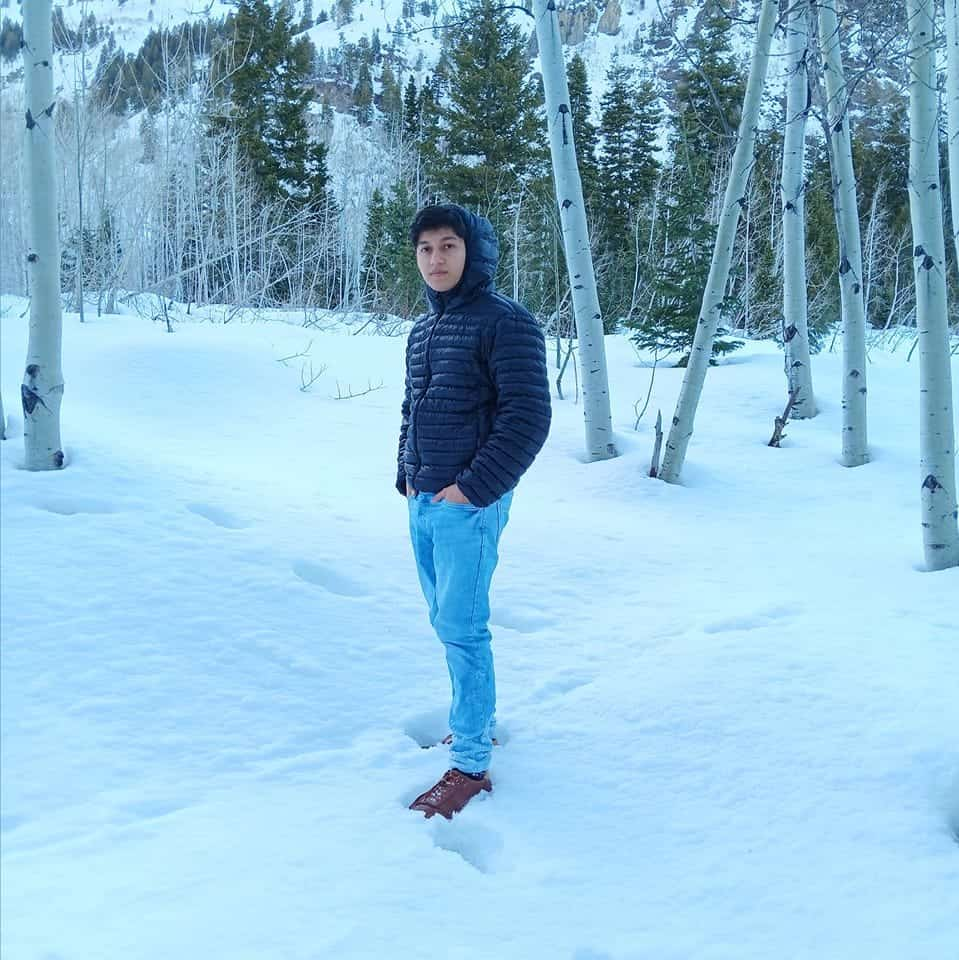

About Me
My name is Harold I was born in La Libertad, Ecuador. I moved from Ecuador to Florida and I'm now living in Utah. I'm currenly working on getting my bachelor's degree in software development. I recently got married and my Wife and I spend a lot of our free time hiking and watching movies. I like to wake up early to workout and prepare for the day.
La Libertad, Ecuador
La Libertad is a city located in western Santa Elena Province, Ecuador, by the Pacific Ocean. It is the seat of La Libertad Canton. As of the census of 2022, there are 112,154 people residing in the city. La Libertad is a canton itself, since 1993. Before 1993, it was part of Salinas Canton. La Libertad has important oil fields and reservoirs.